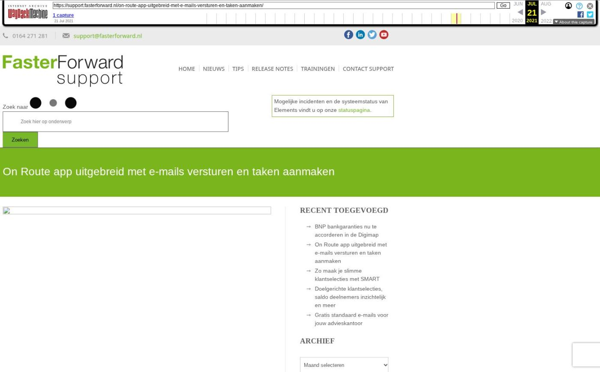

On Route app uitgebreid met e-mails versturen en taken aanmaken

Tekstinhoud
Wist je dat Elements ook als app beschikbaar is? Met de On Route app verstuur je nu ook e-mails naar klanten, maatschappijen en andere contactpersonen. Daarnaast maak je nu ook eenvoudig nieuwe taken aan.
De app is beschikbaar voor iOS in de App Store en voor Android in de Play Store. De app is gratis en alleen beschikbaar als je Faster Forward Elements gebruikt.
Gebruik je Faster Forward On-Route al? Dan wordt je één keer automatisch uitgelogd. Log opnieuw in door de QR code in Elements te scannen om de nieuwe functies te gebruiken.
Klantdossier in je broekzak
Stel dat je onderweg bent naar een klant. Maar voordat je aanbelt, wil je nog even de laatste status van het dossier controleren. Daarvoor biedt Faster Forward On Route de ideale oplossing!
Met deze app heb je een handige light versie van Elements altijd in je broekzak. Wanneer je zoekt op een achternaam, wordt gelijk het juiste dossier met bijbehorende klantgegevens geopend. Zo heb je alle recente en relevante informatie binnen handbereik.
Daarnaast zie je ook alle lopende producten, het laatste e-mailverkeer en de producten gerelateerd aan dit dossier. Wil je nog een document toevoegen aan een klantdossier? Geen probleem. Vanuit de app maak je eenvoudig een foto van het documenten, die vervolgens wordt geüpload in het dossier.
Nieuwe features
E-mails versturen
Het was tot op heden alleen mogelijk om ontvangen e-mails te bekijken. Het versturen van e-mails vanuit de app was een veelgehoorde wens van onze klanten. Vanaf nu is het daarom ook mogelijk om e-mails te versturen!
In de mailbox klik je op ‘Nieuwe e-mail’. Vervolgens vul je een ontvanger en onderwerp in en voeg je tekst en eventuele bijlages toe. Let op: om bijlages toe te voegen op IOS heb je minimaal versie 14.0 nodig. De tekst in de e-mail is ook op te maken zo kan je bijvoorbeeld de tekst dikgedrukt, schuifgedrukt en onderstrepen.
Wanneer je via een dossier een nieuwe e-mail aanmaakt dan is het e-mailadres bij de ontvanger automatisch ingevuld. Ook staat het dossiernummer vermeld in de onderwerp van de e-mail.
Taken aanmaken
Via de kalender is het nu ook mogelijk om taken aan te maken. Voor iedere taak voer je de titel, start- en einddatum in. Ook is het mogelijk om tijdens het aanmaken de taak te annuleren en te verwijderen. Hierbij krijg je een melding of je zeker weet dat je deze actie wilt uitvoeren.
Snelheid en werking van app verbeterd
Naast de nieuwe features hebben we ook de algehele performance van de app verbeterd. Kleine fouten zijn eruit gehaald en de snelheid van het navigeren binnen de app is verbeterd.
Alle functionaliteiten
De On Route app bevat in juli 2021 de volgende functionaliteiten.
Klantdossier
Persoonlijke gegevens inzien
Klant bellen
Navigeren naar adres klant
E-mails lezen en versturen (nieuw)
Bijlages in e-mail toevoegen (nieuw)
Productinformatie bekijken
Documenten raadplegen
Taken bekijken en aanmaken (nieuw)
Categorie: Algemeen